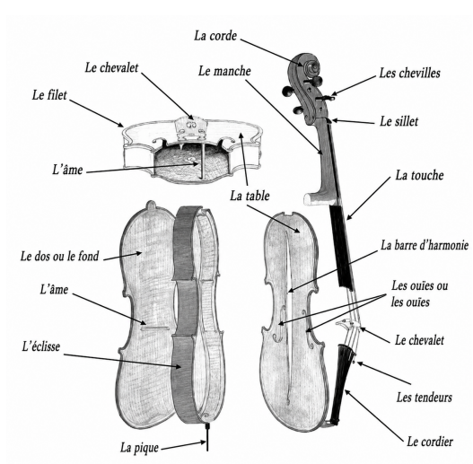
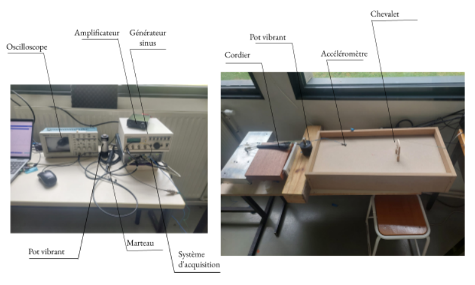
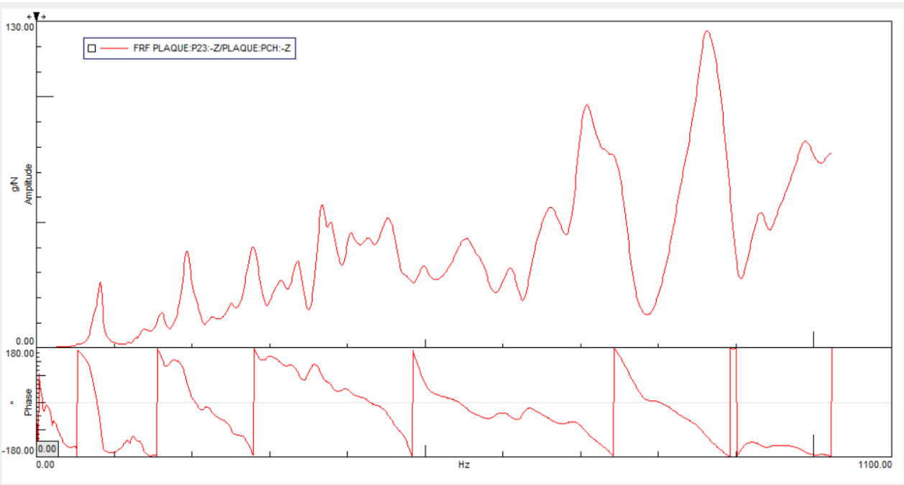

Comprendre le phénomène
La note du loup est liée au couplage entre la corde et la table d’harmonie du violoncelle. Le projet vise à reproduire ce mécanisme sur une structure simplifiée.
TX · UTC · 2026 / PROJECT
Conception d’un banc de mesure pour étudier le couplage corde–plaque et la mobilité vibratoire.
DÉMARCHE & RÉSULTATS
Étude théorique et expérimentale du couplage corde–table d’harmonie, depuis la conception du banc jusqu’à l’observation d’un battement vibratoire autour de 82 Hz.
DOCUMENTS / ANNEXES
↗ Consulter le rapport complet (PDF)
La note du loup est liée au couplage entre la corde et la table d’harmonie du violoncelle. Le projet vise à reproduire ce mécanisme sur une structure simplifiée.

Un banc associant une plaque MDF de 3 mm, une âme, un chevalet, une corde et un pot vibrant a été réalisé. Le montage permet de contrôler l’excitation et d’étudier le couplage vibratoire.

Des essais au marteau instrumenté et à l’accéléromètre ont permis d’obtenir les fonctions de réponse en fréquence (FRF), d’identifier les résonances et d’évaluer les limites du montage.